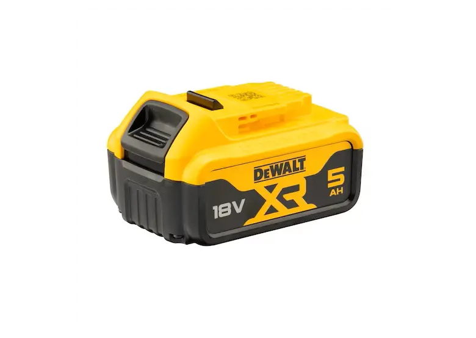
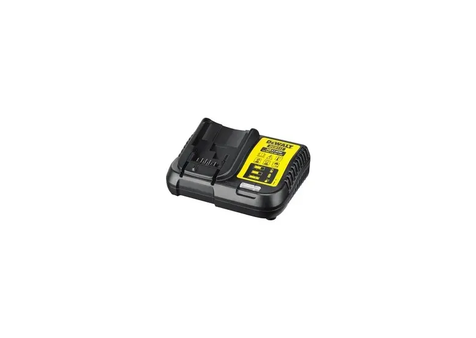
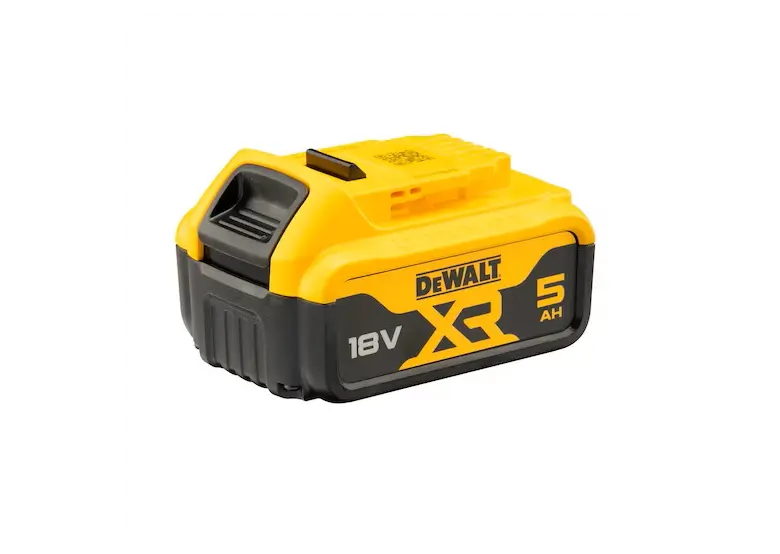
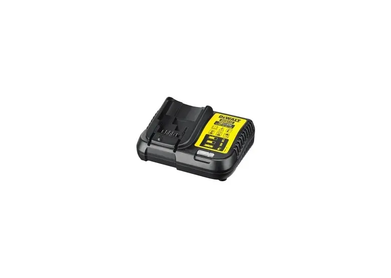

Zakrętarka udarowa DeWALT DCF887
Zakrętarka udarowa DeWALT DCF887 – lekka i poręczna, ale o dużym momencie obrotowym dokręcania z udarem, trzy prędkości pracy i tryb precyzyjnego dokręcania, a także doskonałe oświetlenie miejsca pracy.
 



W zestawie: Narzędzie + 2x bateria z ładowarką + akcesoria
| DANE TECHNICZNE | |
|---|---|
| Napięcie akumulatora | 18V |
| Prędkość bez obciążenia | 1. bieg: 0-1000 obr./min, 2. bieg: 0-2800 obr./min, 3. bieg: 0-3250 obr./min |
| Częstotliwość udaru | 0-3800ud./min |
| Maksymalny moment obrotowy | 205Nm |
| Końcówka wrzeciona | 1/4" (6.35mm) |
| Wibracje na ramionach/dłoniach (udar) | 22m/s2 |
| Wymiary (DxW) | 134x195mm |
| Masa | 0.94kg |